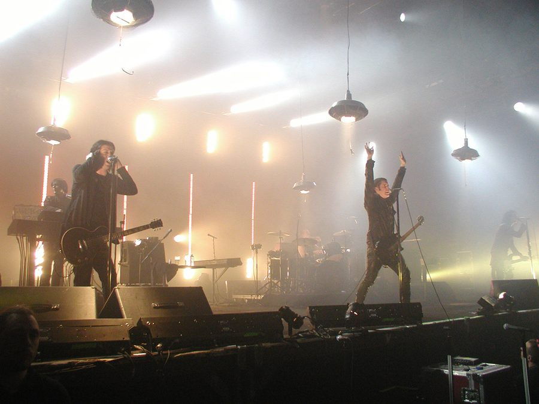

Nine Inch Nails countdown to Year Zero



With an incoming national tour and a new album just hitting the record shelves, the world’s favourite electronic/metal act Nine Inch Nails are back in the spotlight a whole lot sooner than anyone thought possible. Year Zero has just been released and was accompanied by some unusual marketing techniques: songs from the album were leaked by band leader Trent Reznor himself through leaving MP3s on USB drives in bathrooms at the band’s own concerts.
For those of us who are long-term NIN fans it alls seems a little too good to be true that not only will we have them in the country for a tour in early May, but we also have a brand new album to play around with: With Teeth was released only two years ago, but typically it’s been around a five or six year wait between drinks. Even better, it seems to be a return to the conceptual album approach of the Downward Spiral masterpiece from the early 90’s, an ode to tortured angst and self destruction.
Year Zero sets itself in a dystopian world set 5 years from today. It’s a world where the people are sedated by government-sanctioned drugs and the war on terror has blown out into a full-blown fanatical religious struggle, with violent underground resistance movement fighting against the US regime. Sounds all very 1984 yeah?
“I’d been thinking a lot about concepts, in terms of what to write about, I wanted to break away from the idea of opening up my journal and transferring that into song lyrics,” Trent said in an interview available online. “It was about the stage that I’m at right now, of being an American citizen and being concerned about the direction the country is heading in right now: the erosion of freedoms that we’re experiencing, and they way that we ‘re treating the rest of the world, it seemed like something I needed to comment on.”
“And I wanted to do it in a way that didn’t seem preachy, or too rooted in 2007,” he says.
Year Zero is in the stores now, check out the YouTube with Trent discussing his ideas for new album and check below for dates of the NIN tour across the country.
Monday May 7th: Brisbane, Riverstage
Wednesday 9th May: Sydney, Big Top Luna Park (sold out)
Thursday 10th May: Sydney, Big Top Luna Park (sold out)
Friday 11th May: Sydney, Big Top Luna Park
Sunday 13th May: Melbourne, (sold out)
Monday 14th May: Melbourne, (sold out)
Tuesday 15th May: Melbourne, Metro Nightclub